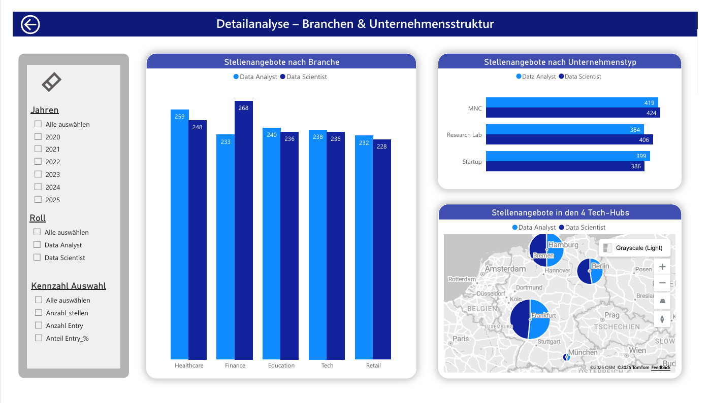
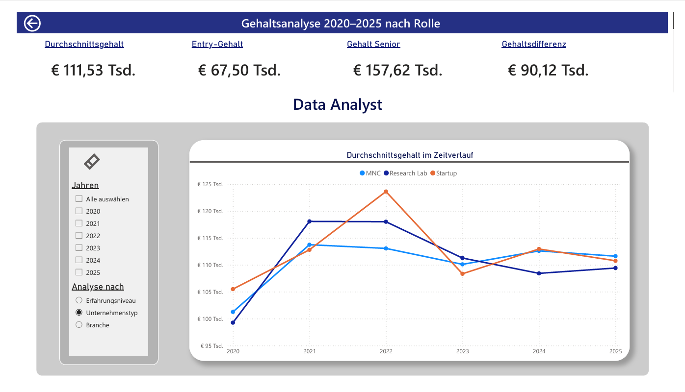

Zielsetzung
Ziel dieser Analyse war es, den deutschen Arbeitsmarkt für Data Analysten und Data Scientists im Zeitraum von 2020 bis 2025 systematisch zu untersuchen. Im Mittelpunkt standen Gehaltsentwicklung, Erfahrungsstufen, Branchen- und Unternehmensstrukturen sowie regionale Verteilungen.
Die zentrale Fragestellung lautete: Welche Faktoren beeinflussen das Gehalt in Data-Berufen am stärksten — und wie hat sich der Markt in den letzten Jahren entwickelt?
Datensatz & Methodik
Der Datensatz stammt von Kaggle (Global AI and Data Science Job Market 2020–2025) und enthält Informationen zu Jobtiteln, Jobtypen, Unternehmensarten sowie Mindest- und Höchstgehältern, aus denen das Durchschnittsgehalt berechnet wurde. Gefiltert wurde ausschließlich auf Deutschland und die Jahre 2020 bis 2025.
Explorative Analyse in Excel
Download des Datensatzes und erste explorative Analyse zur Strukturerkennung. Identifikation einer ID als Verknüpfungsschlüssel zwischen den verschiedenen Dimensionen.
Datenbereinigung in Power Query
Entfernung von Duplikaten, Harmonisierung der Gehaltswerte und Filterung aller unvollständigen Einträge für eine konsistente Datenbasis.
Modellierung: Sternschema
Aufbau eines Sternschemas mit einer zentralen Faktentabelle und mehreren Dimensionstabellen für Rolle, Branche, Unternehmenstyp und Jahr.
DAX-Measures & Visualisierung
Erstellung von Measures für Durchschnittsgehalt, Entry-Anteil und Gehaltsdifferenzen. Aufbau von drei interaktiven Power BI Dashboards.
Dashboards



Zentrale Erkenntnisse
Der Markt ist stabil und strukturell etabliert
Der Datenarbeitsmarkt in Deutschland zeigt ein stabiles Wachstum mit vielfältigen Einstiegsmöglichkeiten. Senior-Positionen dominieren, aber Entry-Level-Stellen bleiben über den gesamten Zeitraum konstant vertreten. Der deutliche Gehaltsanstieg 2021 könnte mit der erhöhten Nachfrage nach datenbasierten Entscheidungen während der Corona-Zeit zusammenhängen.
Data-Kompetenzen sind branchenübergreifend gefragt
Data-Positionen sind nicht nur im klassischen IT-Bereich gefragt. Finance, Healthcare, Education und Retail zeigen eine relevante und vergleichbare Nachfrage. Multinationale Unternehmen, Research Labs und Startups bieten ein ähnliches Volumen an Stellenangeboten — was vielfältige Karrierewege ermöglicht.
Erfahrung wirkt stärker als Branche oder Unternehmensgröße
Die Gehaltsdifferenz zwischen Entry-Level (∅ €67.500) und Senior-Level (∅ €157.600) beträgt über €90.000. Diese Struktur bleibt stabil, unabhängig von Branche oder Unternehmenstyp — Berufserfahrung ist der mit Abstand wichtigste Einflussfaktor auf das Gehalt.